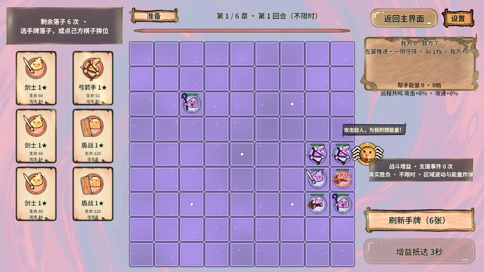
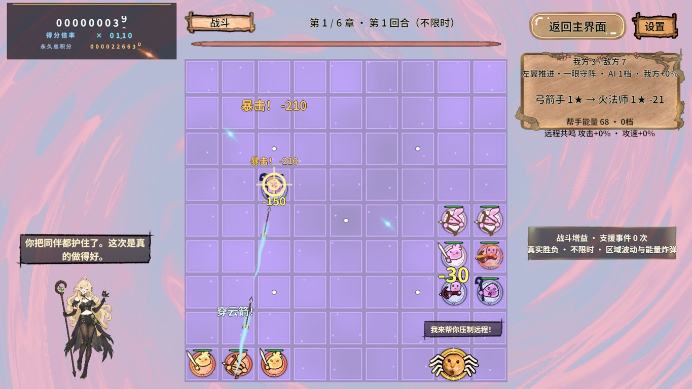
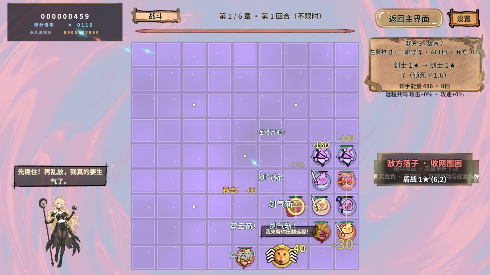
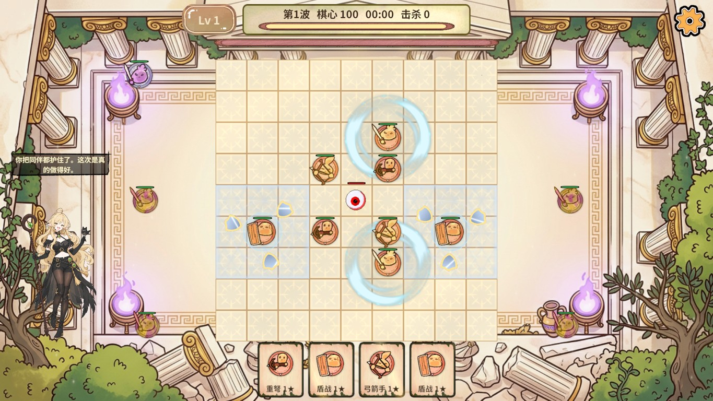
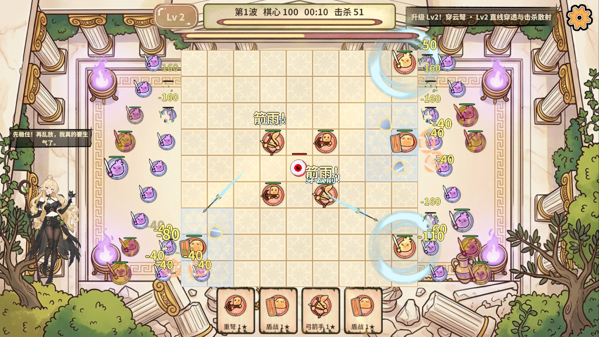
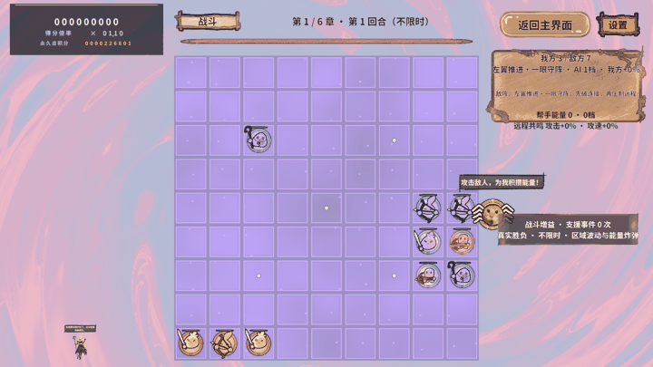
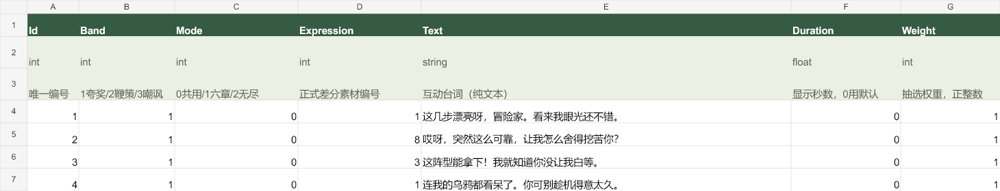

鸦鸦局内互动
只在战斗阶段出现，准备/暂停/剧情均拒绝。早期业务回归和退出清理通过；最终分包与恢复原手牌的业务检查成立，但整体报告因框架Editor文件桥Sharing violation失败。验证边界保留。

准备阶段：原手牌布局，鸦鸦不显示
战斗夸奖，积分位于左上
表现不佳时的嘲讽
无尽左侧场景互动
无尽嘲讽与身体避让
真实战斗弹出截图GIF，非补画
Excel互动台词配置最新2.5秒频率与1.5秒停留验收
最新2.5秒频率与1.5秒停留验收
完整配置说明与证据边界
# 鸦鸦局内互动 · 2026-11-06
六章远征和独立无尽已接入三档表现互动：表现好夸奖、一般鞭策、表现不佳嘲讽。立绘由场景SpriteRenderer显示在左下空区，头顶使用仿助阵帮手的世界空间对话框，平时隐藏；DOTween执行快速弹出、停留与缩回。
用户后续要求已经落实：**准备阶段不弹出**，只有真实战斗阶段可触发；积分面板移到左上方并上移；立绘相比首轮预览放大约50%。最终恢复原六张手牌布局，准备卡片没有被为了立绘压缩。棋盘尺寸和规则保持现有逻辑。
## 触发与控频
- 六章仅GamePhase.Battle，无尽仅EndlessPhase.Fighting；剧情、过场、实操教学、暂停/准备都拒绝，并在阶段改变时收回立绘。加载完成后也再查阶段，防止迟到弹出。
- 一个2.5秒的实际战斗观察窗口累计真实敌方死亡、己方死亡及伤害。空窗口使用普通鼓励，不虚构击杀/损失，也不延续上一窗口的夸奖或嘲讽。六章换回合清窗口，无尽与六章状态分别归本域。
- 真实损失达到1或窗口承伤占起始总生命达到35%时为不佳；六章至少3击杀、无尽至少18击杀且承伤不超过12%时为好；其余有交战的窗口为一般。所有阈值都来自Excel。
- 最初等待2.5战斗秒，全局冷却2.5秒，同档冷却2.5秒，每次只显示一条。正常连续战斗按此节奏每6秒至少两次；完整尺寸停留1.5秒，另有0.24秒弹出和0.18秒缩回。台词按权重选择并避开连续重复。互动随机源独立，不消费战斗掉落/AI随机数。
- 主动拆子、三合一吞掉不算死亡。六章事实来自伤害提交和真正死亡出口；无尽同样来自真实伤害/死亡/棋心掉血出口。表现不反向改血量、积分或胜负。
- 评价是局势指标，不等于长期玩家技术评级。帮手/环境造成的实际伤害也可能进入局势窗口；规则可通过Excel继续调整，未宣称能识别所有战术水平。
## 台词和表情配置
文件：仓库 `RevGame_Client/配置表/鸦鸦互动配置.xlsx`。
| 工作表 | 配置内容 |
|---|---|
| YayaReactionRule | 12项窗口、阈值、采样间隔、显示时长、控频和台词上限参数 |
| YayaReactionLine | 36条台词；Id、Band、Mode、Expression、Text、Duration、Weight |
Band：1夸奖、2鞭策、3嘲讽。Mode：0两模式共用、1仅六章、2仅无尽。Duration为0使用PopupSeconds；Weight必须为正数。每档各12条，台词可直接修改或增加，需保持主键唯一和两个模式三档覆盖。
选用差分：1/8/3用于夸奖，2/14用于一般，23/26/13用于嘲讽。用户最后一句重复写“一般”按其前面的三档目标处理为嫌弃脸嘲讽。正式图片在 `Assets/GameRes/Art/Characters/Yaya/Expressions`，已有1、3、13、23复用，新增仅2、8、14、26，没有复制同图的局内低清版本。
图片映射：`Assets/GameRes/Config/Yaya/YayaExpressionCatalog.asset`。编号与Sprite配对，可在Inspector选择新图。修改Excel后用项目RevCLI执行excel.export；再跑 `tools/font-subset.py`，经 `game.background.build` 构建PC/Android。制作入口 `game.yaya-reaction.configure` 只补缺图，不覆盖后续图片目录配置；增加新表情需同步图片目录、图集归属和台词编号。
## 场景、图集与资源寿命
- GameScene/EndlessScene都有YayaReactionScene根和YayaReactionPresenter，没有大厅UI画像或另一个全局Manager。对应域启动CampaignYayaReactionLogic/EndlessYayaReactionLogic，RevScope退出自动停监听和采样。
- 立绘Prefab为 `Characters/Yaya/Reaction/YayaReaction`，由RevPool异步取得；身体是SpriteRenderer，头顶Canvas为WorldSpace，无GraphicRaycaster，Image/Text的raycastTarget=false。
- 触发才加载图片目录与需要的图集绑定；显示结束清Sprite/Text、归池并归还目录/图集引用。空闲小Prefab保留到离开域以复用Canvas，域退出DestroyPool。异步带代次检查，旧回调不能把立绘交给新局。
- 共享表情YayaExpressions仍被StoryBook直接图片依赖持有，关闭互动不强制卸掉剧情在用纹理。仅局内新增四张分属YayaCombatExpressions，不跟开场配置常驻，config_yaya只在互动中加载。
- 源图片1600×2400完整保留；正式Sprite平台max1024，PC BC3/DXT5、Android ETC2_RGBA8，关闭Read/Write/mipmap，唯一Sprite Atlas V2，禁旋转/紧密裁切。不用散图Texture2D重新加载，不每帧GetSprite或克隆材质。
- 安全区域包含气泡与Back外扩，检查棋盘、当前UI文字/按钮、无尽敌潮身体范围与盘外领主；空间不足宁可不显示，敌人后来进入则收回。窄屏可能缩小或暂不显示，此处未承诺任何比例都固定大小。
## 测试入口
| 入口 | 用途 |
|---|---|
| GM `鸦鸦/互动状态` | 查询当前实际可见、评价档、表情与错误 |
| GM `鸦鸦/测试评价 1` | 隔离存档、真实战斗阶段下给固定窗口，仍受正式冷却；1/2/3对应三档 |
| yaya.reaction-state | 只读业务窗口、自然事实计数、实际立绘/气泡/租约 |
| yaya.evaluate-window | 仅开发态隔离窗口夹具，分类和控频共用正式函数，不改棋局 |
| yaya.reaction-cleanup | 归还临时显示并恢复自然采样 |
| Editor game.yaya-reaction.rules | 8项纯分类边界/配置检查 |
所有运行期能力由GameBootstrap集中注册/注销。生产非开发版本不提供变更夹具。RevMCP实际执行顺序：rev_discover → rev_call读取状态/GM → rev_run断言并finally清理；Unity制作/导表/构建优先RevCLI live。
2026-11-06高频修订增加只读展示证据：`recentStarts`是最近三次真实落屏时间（非缩放秒），`cadenceReady`表示这三次跨度不超过6秒；`holdSeconds`为本次完整尺寸停留参数，`lastVisibleSeconds`为上一次实际可见总时长。这些字段只在开发态提供，不写玩家存档；固定长度数组不随长局增长。当前36条台词Duration均0，因此全部使用默认1.5秒；后续显式Duration会覆盖默认值。
本次高频验收为47主步骤、3清理步骤全部通过，PC真实AB自然战斗连续三次跨度：六章4.941秒、无尽4.986秒；默认停留1.5秒，正常结束实际总时长约1.92秒。准备/暂停拒绝、台词完整、无重叠、显示后引用释放通过，本轮日志Error为0。此结果不代表下方历史文件桥Sharing violation已修复。最新证据见[高频互动验收](高频互动验收_2026-11-06.html)。
PC/Android各76包已重新构建发布。首次Android构建完成复制，但Unity BuildPipeline报两条“Trying to reload asset from disk that is not stored on disk”，工单明确失败；切到GameScene卸载大厅编辑态预览后再次构建成功。未将首轮复制成功冒充构建无错误，也未改框架内核。最终逐包核对发布与构建目录字节/大小一致，再恢复StartScene。
## 验收结果与限制
环境：Unity 2022.3.15f1c1、Windows Editor、真实PC AB、固定隔离存档/无尽种子1101。没有把工具success或单张截图当全部规则通过。
| 检查 | 结果 |
|---|---|
| 配置/规则 | 8项分类边界与两个模式的三档覆盖通过；36条台词和12参数由真实导表生成 |
| 六章战斗三档 | 36步通过：准备拒绝、战斗夸奖/鞭策/嘲讽、重复请求冷却拒绝、完整气泡/无重叠、显示后目录/图集释放；3步清理通过 |
| 无尽身体避让/暂停 | 22步通过：准备拒绝、开战三档、完整气泡/身体避让、暂停拒绝、显示结束释放；3步清理通过 |
| 六章逐章接线 | 62步通过：六章进入、剧情就绪、准备拒绝、观察者模式1、无默认加载、返大厅后观察者/呈现器为空；3步清理通过 |
| 动画与退出 | 26步通过：16张真实弹出截图、显示结束释放、无尽返回大厅域关闭后无观察者/呈现器；3步清理通过 |
| 最终独立图集 | 22主步骤执行，三档播放/暂停/资源释放成立；最后runtime.logs.errorCount=0断言失败，唯一Error为RevAutomationBridge读取inbox JSON的Sharing violation。整体报告明确失败，未降断言 |
| 最终恢复原手牌 | 48主步骤执行，准备阶段不显示、原六牌恢复、放大立绘/三档/控频/释放均成立；最后日志断言同样因文件桥Sharing violation失败；3步清理通过 |
自然战斗曾观察到factsObserved和TriggerCount持续增长，触发了真实鞭策台词；这与隔离窗口夹具分开记录。没有改战斗随机种子或冻结实际战斗来制造成功。
最初测试曾过早在Home尚未就绪发起选关、章节剧情尚未落屏就skip、未重新启用内存隔离、生成图集清单尚未编译。均保留失败记录，后续等待实际条件/隔离/显式recompile修正。手牌收紧实验造成文字挤压，最终撤回，原PreparePanel不提交变化。
最终文件桥Sharing violation连续出现，位于框架快照编辑器收发室而非互动算法。未在RevGame改Revolution内核，不能宣称此竞争已修复，也不能把最终报告说成全部通过。末轮额外门禁复核曾遇到桥心跳中断；RevCLI connect恢复后再次执行当前编译与资源门禁，编译messages为空、8项规则通过、651映射/76包/20图集/318唯一图片，重复/循环/漏标/重名/Android Shader错误均0。失败与恢复分开保留，没有伪造新检查结果。
## 包体
最终PC/Android各76包；20活动图集、318张Sprite唯一覆盖，重复依赖/循环/漏标/同包重名/Android Shader错误在构建门禁均0。真实清单如下，增量相对本任务开始的f10e364资源集：
| 平台 | 包数 | 新增局内差分图集 | 图片目录 | 互动Prefab包 | 总业务AB增量 |
|---|---:|---:|---:|---:|---:|
| PC | 76 | 768.6 KiB | 2203 B | 7358 B | 0.77 MiB |
| Android | 76 | 780.2 KiB | 2203 B | 7358 B | 0.78 MiB |
共享剧情表情图集仍为原6张，PC1180124字节，没有因局内四张增加开场依赖。中文子集1745字，777932字节。源码、美术和允许入库的StreamingAssets提交，外部AssetBundles、Library、原始JSON/参数、Profiler与安装包不提交；报告不生成ZIP。
框架可行性：RevLogic+RevScope支撑两个模式的观察生命周期，RevEvent只广播已提交事实，RevResManager/RevPool支撑短显示和退出清理，RevTask支撑取消/迟到防护，Excel生成表和SO区分玩法阈值与美术绑定。主要未解框架边界是Editor自动化文件桥的偶发共享占用。Android完成AB与Shader构建，真机/IL2CPP/独立Player/手机帧率未执行。